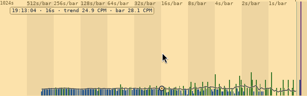

The counts
← The drum spectrogram, read as a landscape · ↑ Reading the window · The random line →
The strip of bars under the drum: a second a bar at the right, and half a day of history to the left.

One bar per second at the right, with older counts packed into longer bars to the left. Each panel to the left holds twice as long in a bar, doubling out to 1024 seconds a bar: eleven panels, half a day of history in one row, at one-second resolution where it matters.
Each panel is captioned with how much time a bar holds and how far the panel reaches (4s/bar · 84s). The F at a boundary marks where a finer panel hands over to a coarser one: a spike that crosses it is drawn half as wide on the far side. The seam is shown on purpose, because a reader who has noticed it once never misreads a spike's width again.
The line over the bars is the trend: each bar taken with the four either side of it, weighted by the seconds they cover. A bar at background is two or three counts and the eye follows the tallest; the line is what the eye should follow instead.
Point at a bar and a circle marks the trend there, with when the bar was, how long it is, and the trend's and the bar's own rate in CPM.
The bars are coloured by the same bands as the dials, so a bar over 120 CPM is advisory-coloured wherever it is in the strip.
← The drum spectrogram, read as a landscape · ↑ Reading the window · The random line →